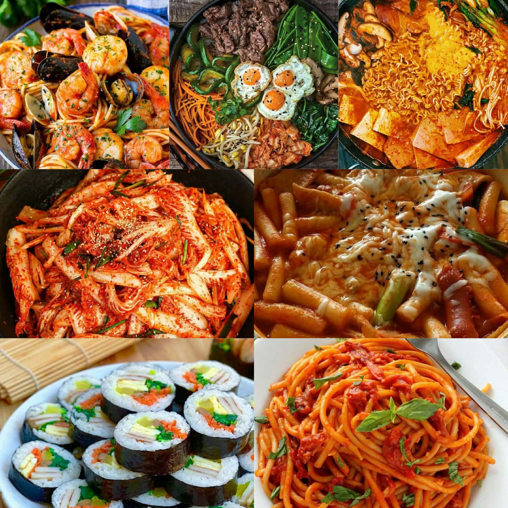
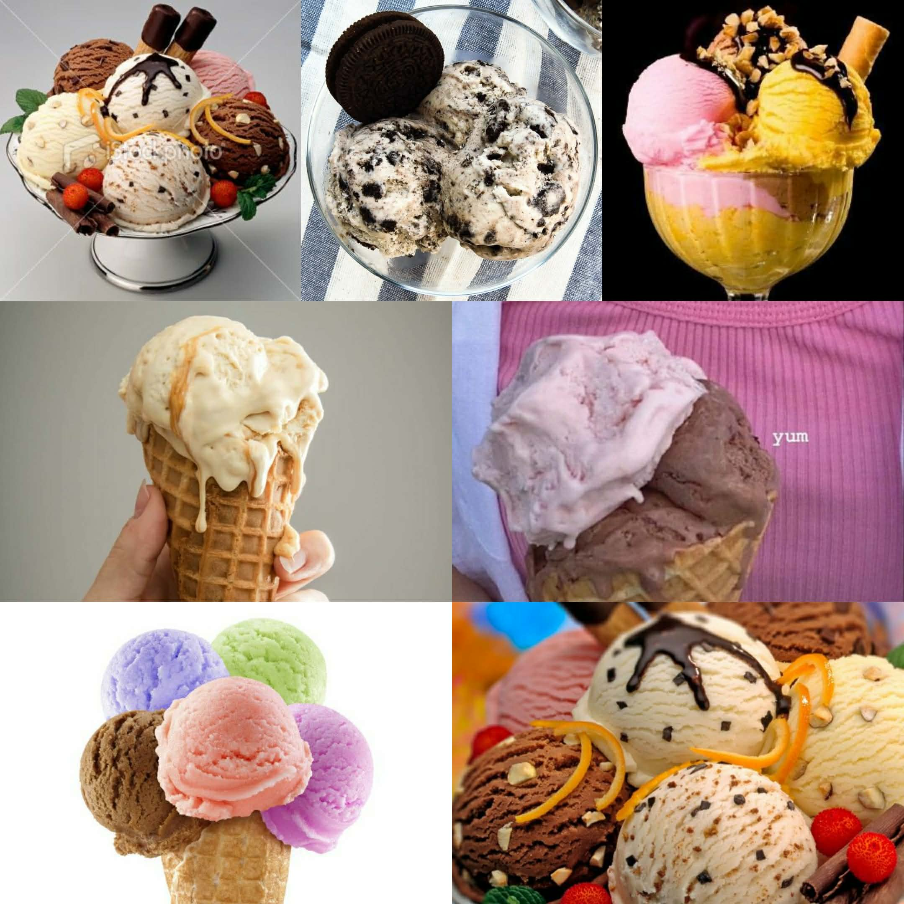
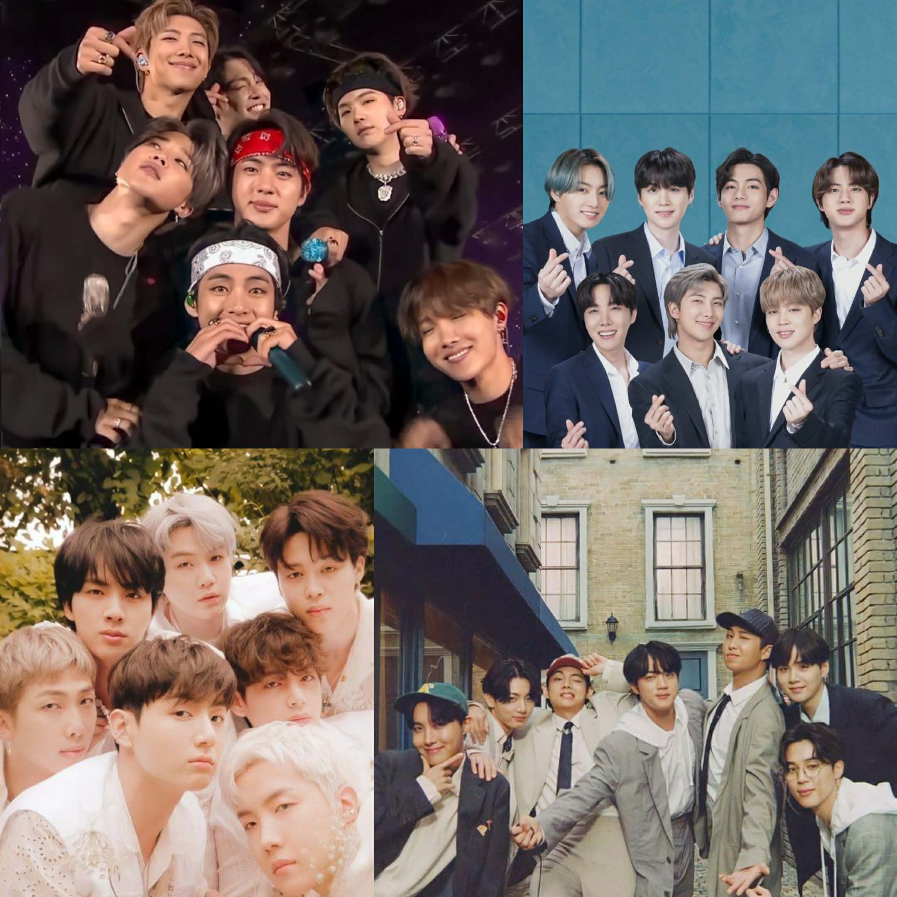
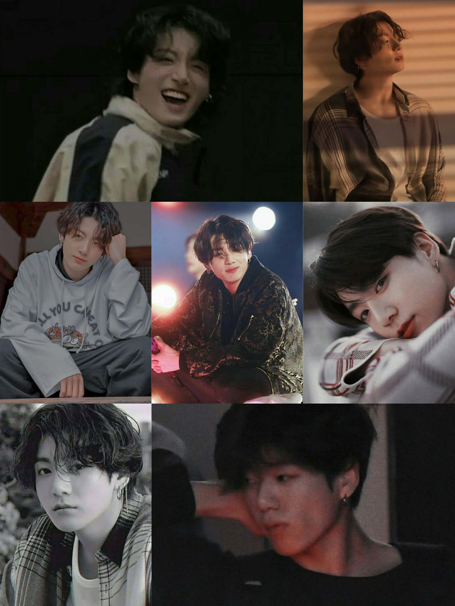
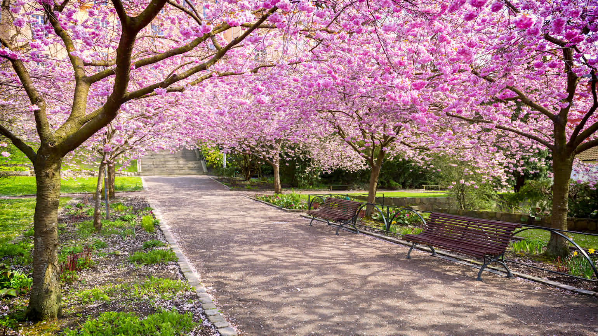

A COLLECTION OF THINGS I LOVE ♡
My Favorites
Everyone has favorite things that reflect their personality,
interests, and preferences. Some are connected to the things
we enjoy doing, while others simply make us happy. Here are
some of my personal favorites that I would love to share.
♡ 🌷 ♡
01

Favorite Food
I enjoy eating different kinds of food, especially
seafood and Korean dishes. Some of my other favorites
include spaghetti, burgers, and fries. I also love
discovering new flavors.
Seafood • Spaghetti • Korean Food • Burgers • Fries
02

Favorite Dessert
My favorite dessert is ice cream. I enjoy its creamy
texture and different flavors. It is a simple treat
that can make an ordinary day a little sweeter.
Ice Cream ♡
03

Favorite Artist
My favorite music group is BTS. I enjoy their music
because of their unique style, meaningful songs,
and amazing performances. K-pop is my favorite
music genre.
BTS • K-pop
04

Favorite BTS Member
My favorite BTS member is Jungkook.
I admire his amazing talent, dedication,
and versatility as a singer and performer.
I enjoy his music, stage presence, and the
passion he shows in everything he does.
I also appreciate his hard work and continuous
efforts to improve himself, which make him
inspiring and one of my favorite artists.
Jungkook ♡
05
My Favorite BTS Playlist
BTS • My Spotify Playlist
Music is one of the things I enjoy most, especially
listening to BTS. This playlist is a collection of
songs I love listening to whenever I want to relax,
enjoy my free time, or simply appreciate music.
06
Favorite K-Drama
My favorite K-drama is Descendants of the Sun.
I enjoy its interesting storyline, memorable
characters, and perfect combination of romance,
action, and drama. I especially love how the series
portrays love, friendship, courage, and sacrifice.
The chemistry between the characters makes the story
more enjoyable and memorable, making it one of my
favorite K-dramas that I would gladly watch again.
Descendants of the Sun
07

Favorite Weather
My favorite weather is spring. I like the gentle
atmosphere, fresh surroundings, and pleasant feeling
that this season brings.
Spring Season 🌷
08
Favorite Quotes
I love meaningful quotes because they remind me
of important things in life and encourage me
to keep moving forward.
"Stand tall in your solitude, for true strength lies in being different."
"Everything happens for a reason, and every experience teaches us something."
"Be proud of how far you have come, even if you still have a long way to go."
"You don't need to have a perfect life to be happy or successful."
"Your journey is your own, so never feel pressured to follow someone else's timeline."
A Little Reminder ♡
Our favorite things may seem simple, but they can tell a lot
about who we are. They remind us of the things that bring
us happiness, comfort, and inspiration. These are some of
the little things that make life more meaningful to me.
♡ Thank you for visiting my favorites page! ♡